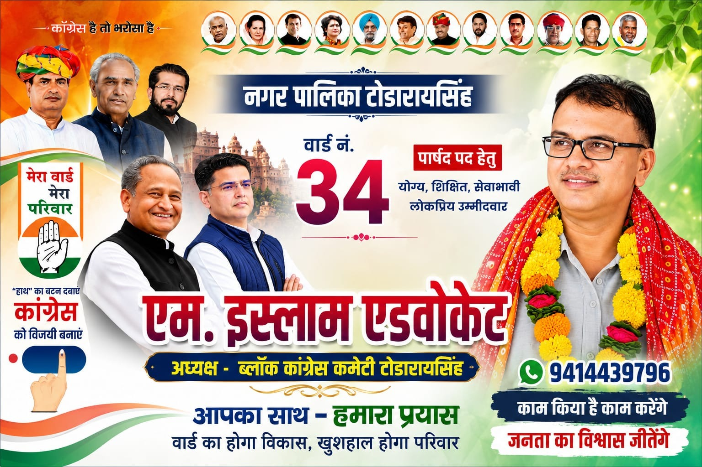

उम्मीदवार / पद की जानकारी
वार्ड34
पदपार्षद
उम्मीदवारयहाँ नाम लिखें
दलयहाँ आधिकारिक दल का नाम लिखें
यह पेज केवल सार्वजनिक/तथ्यात्मक जानकारी के लिए बनाया गया है। आधिकारिक चुनाव जानकारी के लिए संबंधित निर्वाचन प्राधिकरण की वेबसाइट देखें।
उपलब्ध प्रचार/दस्तावेज़

ऊपर की छवि को केवल दस्तावेज़/संदर्भ के रूप में दिखाएँ; प्रचारात्मक संदेशों को अलग से दोहराने के बजाय आधिकारिक स्रोत उपलब्ध कराएँ।
वार्ड से जुड़े सार्वजनिक मुद्दे
- सड़क एवं नाली व्यवस्था — तथ्य/स्थिति यहाँ लिखें
- पेयजल एवं स्वच्छता — तथ्य/स्थिति यहाँ लिखें
- स्ट्रीट लाइट/सार्वजनिक प्रकाश — तथ्य/स्थिति यहाँ लिखें
- कचरा प्रबंधन — तथ्य/स्थिति यहाँ लिखें
आधिकारिक चुनाव जानकारी
इन बटन में अपने राज्य/स्थानीय निर्वाचन प्राधिकरण के आधिकारिक लिंक डालें।
सार्वजनिक संपर्क
संपर्क विवरण यहाँ लिखें। केवल ऐसा नंबर/ईमेल डालें जिसे सार्वजनिक रूप से साझा करने की अनुमति हो।